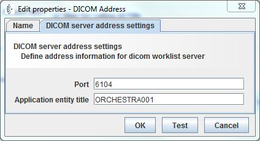

DICOM Address

Topic content
Description
Address information for a DICOM worklist server.
Purpose of object
This environment entry is used to set the listener port and the Application entity title of a DICOM worklist.
Since Orchestra Version
Introduced in version 4.4.0
Configuration

Step by Step
1.Create an Environment entry of type DICOM address.
2.Enter a where the DICOM server is listening; per default this is 6104.
3.Enter the of the server